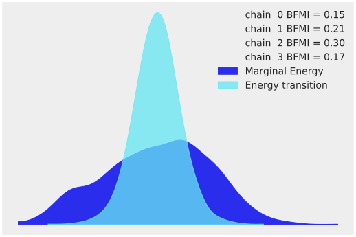

ArviZ.jl Quickstart
This quickstart is adapted from ArviZ's Quickstart.
using ArviZ
# ArviZ ships with style sheets!
ArviZ.use_style("arviz-darkgrid")Get started with plotting
ArviZ.jl is designed to be used with libraries like CmdStan and Turing but works fine with raw arrays.
plot_posterior(randn(100_000));Plotting a dictionary of arrays, ArviZ.jl will interpret each key as the name of a different random variable. Each row of an array is treated as an independent series of draws from the variable, called a chain. Below, we have 10 chains of 50 draws each for four different distributions.
using Distributions
size = (10, 50)
plot_forest(Dict(
"normal" => randn(size),
"gumbel" => rand(Gumbel(), size),
"student t" => rand(TDist(6), size),
"exponential" => rand(Exponential(), size)
));Plotting with MCMCChains.jl's Chains objects produced by Turing.jl
ArviZ is designed to work well with high dimensional, labelled data. Consider the eight schools model, which roughly tries to measure the effectiveness of SAT classes at eight different schools. To show off ArviZ's labelling, I give the schools the names of a different eight schools.
This model is small enough to write down, is hierarchical, and uses labelling. Additionally, a centered parameterization causes divergences (which are interesting for illustration).
First we create our data.
J = 8
y = [28.0, 8.0, -3.0, 7.0, -1.0, 1.0, 18.0, 12.0]
sigma = [15.0, 10.0, 16.0, 11.0, 9.0, 11.0, 10.0, 18.0]
schools = [
"Choate",
"Deerfield",
"Phillips Andover",
"Phillips Exeter",
"Hotchkiss",
"Lawrenceville",
"St. Paul's",
"Mt. Hermon"
];Now we write and run the model using Turing:
using Turing
@model centered_eight(J, y, sigma) = begin
mu ~ Normal(0, 5)
tau ~ Truncated(Cauchy(0, 5), 0, Inf)
theta = tzeros(J)
theta ~ [Normal(mu, tau)]
y ~ MvNormal(theta, sigma)
end
nchains = 4
model = centered_eight(J, y, sigma)
sampler = NUTS(1000, 0.8)
turing_chns = mapreduce(chainscat, 1:nchains) do _
return sample(model, sampler, 2000; progress = false)
end;Most ArviZ functions work fine with Chains objects from Turing:
plot_autocorr(convert_to_inference_data(turing_chns); var_names=["mu", "tau"]);Convert to InferenceData
For much more powerful querying, analysis and plotting, we can use built-in ArviZ utilities to convert Chains objects to xarray datasets. Note we are also giving some information about labelling.
ArviZ is built to work with InferenceData (a netcdf datastore that loads data into xarray datasets), and the more groups it has access to, the more powerful analyses it can perform. Here is a plot of the trace, which is common in Turing workflows. Note the intelligent labels.
data = from_mcmcchains(
turing_chns,
library = "Turing",
coords = Dict("school" => schools),
dims = Dict("theta" => ["school"], "obs" => ["school"])
)InferenceData with groups:
> posterior
> sample_statsplot_trace(data);We can also generate summary stats
summarystats(data) mean sd hpd_3% hpd_97% mcse_mean mcse_sd ess_mean ess_sd ess_bulk ess_tail r_hat
theta[1] 6.494 5.542 -4.504 16.393 0.210 0.149 696.0 696.0 600.0 1199.0 1.01
theta[2] 5.196 4.845 -4.909 13.947 0.226 0.160 461.0 461.0 434.0 1584.0 1.01
theta[3] 4.267 5.375 -6.148 13.713 0.233 0.165 531.0 531.0 478.0 1344.0 1.01
theta[4] 5.005 4.865 -4.547 13.660 0.195 0.138 621.0 621.0 574.0 1360.0 1.01
theta[5] 3.910 4.879 -5.435 12.193 0.261 0.185 349.0 349.0 350.0 1612.0 1.01
theta[6] 4.229 4.943 -5.430 12.940 0.228 0.161 469.0 469.0 439.0 1601.0 1.01
theta[7] 6.658 5.062 -3.137 16.150 0.216 0.153 550.0 550.0 505.0 1200.0 1.02
theta[8] 5.138 5.297 -4.584 15.239 0.195 0.138 740.0 740.0 690.0 1673.0 1.01
tau 3.750 3.267 0.324 9.552 0.256 0.181 163.0 163.0 72.0 22.0 1.04
mu 4.682 3.417 -2.392 9.958 0.210 0.149 265.0 265.0 283.0 892.0 1.01
and examine the energy distribution of the Hamiltonian sampler
plot_energy(data);
Plotting with CmdStan.jl outputs
CmdStan.jl and StanSample.jl also default to producing Chains outputs, and we can easily plot these chains.
Here is the same centered eight schools model:
using CmdStan
schools_code = """
data {
int<lower=0> J;
real y[J];
real<lower=0> sigma[J];
}
parameters {
real mu;
real<lower=0> tau;
real theta[J];
}
model {
mu ~ normal(0, 5);
tau ~ cauchy(0, 5);
theta ~ normal(mu, tau);
y ~ normal(theta, sigma);
}
generated quantities {
vector[J] log_lik;
vector[J] y_hat;
for (j in 1:J) {
log_lik[j] = normal_lpdf(y[j] | theta[j], sigma[j]);
y_hat[j] = normal_rng(theta[j], sigma[j]);
}
}
"""
schools_dat = Dict("J" => J, "y" => y, "sigma" => sigma)
stan_model = Stanmodel(
model = schools_code,
nchains = 4,
num_warmup = 1000,
num_samples = 1000,
)
_, stan_chns, _ = stan(stan_model, schools_dat, summary = false);
File /Users/saxen/projects/ArviZ.jl/docs/build/tmp/noname.stan will be updated.plot_density(convert_to_inference_data(stan_chns); var_names=["mu", "tau"]);Again, converting to InferenceData, we can get much richer labelling and mixing of data. Note that we're using the same from_cmdstan function used by ArviZ to process cmdstan output files, but through the power of dispatch in Julia, if we pass a Chains object, it instead uses ArviZ.jl's overloads, which forward to from_mcmcchains.
data = from_cmdstan(
stan_chns;
posterior_predictive = "y_hat",
log_likelihood = "log_lik",
coords = Dict("school" => schools),
dims = Dict(
"theta" => ["school"],
"y" => ["school"],
"log_lik" => ["school"],
"y_hat" => ["school"],
"theta_tilde" => ["school"]
)
)InferenceData with groups:
> posterior
> posterior_predictive
> sample_statsHere is a plot showing where the Hamiltonian sampler had divergences:
plot_pair(data; coords = Dict("school" => ["Choate", "Deerfield", "Phillips Andover"]), divergences = true);